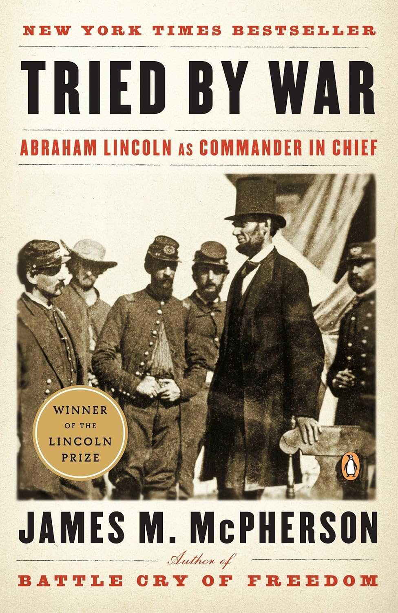

"Tried by War: Abraham Lincoln as Commander in Chief"
- Read on 2026-01-17
- Rating: ️️️️️
- Format: 🎧 (9 hours 40 minutes)
I'll repeat something I've told others: if you think you can only stomach a single book about the American Civil War, let it be "Battle Cry of Freedom", also by McPherson. This particular book was another book for the Civil War enthusiasts. This was an interesting, focused view into Lincoln's involvement in national policy, national strategy, military strategy, operations, and tactics. Lincoln made mistakes, and learned from many of them. His relationship and skill with each of those areas changed over time. I like McPherson's writing style, so the book went quickly. Lincoln continues to impress me. Still imperfect. Some dubious actions as President that set a... bendable precedent.
One particular area this book reminded me of, and honed in on is around George B. McClellan. I wonder if I'd like him more in person than I do from third party descriptions. On the plus side, he was only 34 when he was made the Commanding General of the U.S. Army. 34! McClellan was genuinely talented at organization and training - with well-drilled and well-equipped troops with high morale. But he was insubordinate, totally full of himself, and immensely rude about so many people around him. One of the classic characteristics about McClellan was his consistent reluctance to engage the enemy.
After the Battle of Antietam, McClellan and an amazing opportunity to pursue (and potentially finish-off) Lee's army. He didn't pursue them, and the war continued for years after that. Lincoln's frustration was nearly palpable as he called that army "McClellan's bodyguard" (since they weren't fighting, just protecting McClellan). And weeks after the battle, when McClellan was asking for more horses, because his were fatigued, Lincoln quipped, "Will you pardon me for asking what the horses of your army have done since the battle of Antietam that fatigue anything?"
Lastly, I loved a letter he wrote to "Fighting Joe" Hooker. Full of praise, but with some correction. A calculated appointment. I include it below for your enjoyment:
Executive Mansion Washington, January 26, 1863
Major General Hooker: General.
I have placed you at the head of the Army of the Potomac. Of course I have done this upon what appear to me to be sufficient reasons. And yet I think it best for you to know that there are some things in regard to which, I am not quite satisfied with you. I believe you to be a brave and a skilful soldier, which, of course, I like. I also believe you do not mix politics with your profession, in which you are right. You have confidence in yourself, which is a valuable, if not an indispensable quality. You are ambitious, which, within reasonable bounds, does good rather than harm. But I think that during Gen. Burnside's command of the Army, you have taken counsel of your ambition, and thwarted him as much as you could, in which you did a great wrong to the country, and to a most meritorious and honorable brother officer. I have heard, in such way as to believe it, of your recently saying that both the Army and the Government needed a Dictator. Of course it was not for this, but in spite of it, that I have given you the command. Only those generals who gain successes, can set up dictators. What I now ask of you is military success, and I will risk the dictatorship. The government will support you to the utmost of it's ability, which is neither more nor less than it has done and will do for all commanders. I much fear that the spirit which you have aided to infuse into the Army, of criticising their Commander, and withholding confidence from him, will now turn upon you. I shall assist you as far as I can, to put it down. Neither you, nor Napoleon, if he were alive again, could get any good out of an army, while such a spirit prevails in it.
And now, beware of rashness. Beware of rashness, but with energy, and sleepless vigilance, go forward, and give us victories.
Yours very truly A. Lincoln
- Prior: Isaac's Storm